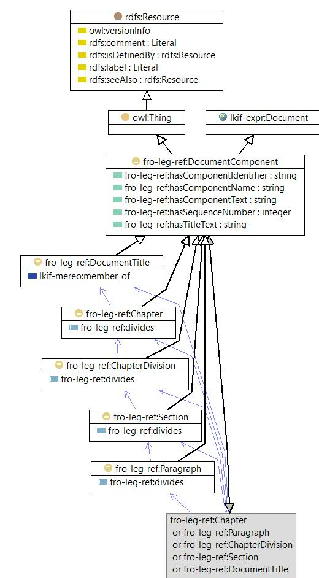

-

owl:Class

|
| owl:Class |
|
| Document Component |
|
| A defined collection class for generic document components. It is the union of its subclasses: Paragraph, Chapter, ChapterDivision, Section, Document Title |
| References | |
|---|---|
© 2016 Jayzed Data Models Inc. generated with TopBraid Composer back to Financial Regulation Ontology or documentation index